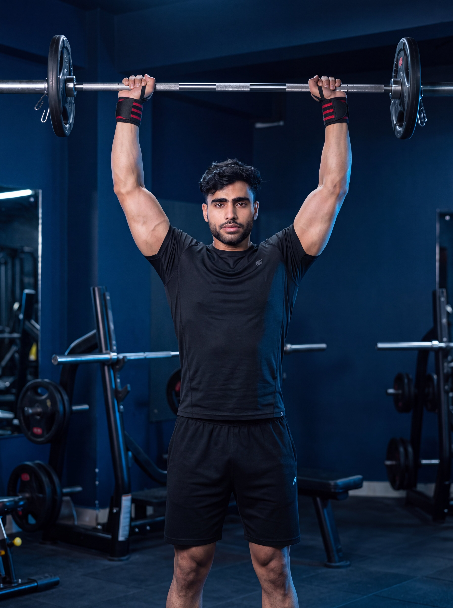

Primary Muscle
Deltoids
Build Stronger Shoulders, Increase Overhead Strength & Develop Balanced Upper-Body Power
The Shoulder Press is a fundamental compound upper-body exercise that primarily targets the anterior and lateral deltoids while also engaging the triceps, upper chest, trapezius, and core stabilizers. Pressing the weight overhead helps build shoulder size, increase pressing strength, improve overhead stability, and enhance functional upper-body performance for sports and everyday activities.

Deltoids
Barbell
Beginner
Compound
Discover which muscles are primarily responsible for the Shoulder Press and which supporting muscles assist in pressing the weight overhead, stabilizing the shoulder joint, and maintaining proper posture throughout each repetition.
Front and Side Shoulders
Back of Upper Arm
Upper Chest
Upper Back & Core
Discover how the Shoulder Press helps build stronger shoulders, increase overhead pressing strength, improve shoulder stability, and develop balanced upper-body power through a fundamental compound movement.
Primarily targets the anterior and lateral deltoids, helping increase shoulder size, improve muscle definition, and create a broader upper-body appearance.
Strengthens the muscles responsible for pressing weight overhead, improving performance in sports, functional activities, and other upper-body pressing exercises.
As a compound exercise, the Shoulder Press recruits the deltoids, triceps, upper chest, trapezius, and core, promoting coordinated upper-body strength.
Strengthens the muscles that stabilize the shoulder joint, helping improve overhead control and reduce the risk of instability during pressing movements.
Builds the strength needed for everyday overhead tasks, athletic movements, and lifting objects safely above shoulder level.
The Shoulder Press allows gradual increases in training load, making it an excellent exercise for building long-term strength, muscle mass, and overall upper-body performance.
Follow these step-by-step instructions to perform the Shoulder Press with proper posture, controlled movement, and safe overhead pressing mechanics for maximum shoulder development.
Stand with your feet about shoulder-width apart and grip the barbell slightly wider than shoulder width. Position the bar across the front of your shoulders with your elbows slightly in front of the bar.
Keep your wrists straight and your grip firm to maintain better control throughout the lift.
Tighten your core, squeeze your glutes, and maintain a neutral spine. Keep your chest lifted while avoiding excessive arching of the lower back.
Think about creating a solid foundation before you press. A strong core improves stability and power.
Press the barbell upward in a straight path until your arms are fully extended overhead. Allow your head to move slightly forward as the bar passes your forehead.
Drive the bar overhead rather than away from your body to maintain an efficient pressing path.
Finish the repetition with your arms fully extended, shoulders engaged, and the bar positioned directly over your head in line with your shoulders and hips.
Avoid shrugging your shoulders excessively at the top. Keep the movement controlled and stable.
Slowly lower the barbell back to the starting position at shoulder level while maintaining a braced core and full control. Repeat for the desired number of repetitions.
Control the lowering phase instead of letting gravity do the work. A slow descent improves muscle activation and helps protect the shoulder joints.
Avoid these common technique mistakes to improve shoulder activation, increase pressing strength, and perform the Shoulder Press safely and effectively.
Leaning backward excessively during the press places unnecessary stress on the lower back and shifts emphasis away from the shoulders, reducing exercise efficiency.
Brace your core, squeeze your glutes, and maintain a neutral spine throughout the movement. If needed, reduce the weight until proper posture can be maintained.
Allowing the bar to travel away from your body reduces pressing efficiency, places extra stress on the shoulders, and makes the lift more difficult to control.
Press the bar in a nearly vertical path and keep it close to your face as it moves overhead. Allow your head to move slightly forward once the bar clears your forehead.
Lifting more weight than you can control often leads to poor technique, incomplete repetitions, and increased stress on the shoulders, wrists, and lower back.
Choose a weight that allows you to complete every repetition with full control, proper range of motion, and consistent technique.
Dropping the bar rapidly reduces time under tension and limits muscle activation while increasing stress on the shoulder joints during the lowering phase.
Lower the bar in a slow and controlled manner until it returns to shoulder level, maintaining tension on the muscles throughout the entire repetition.
Apply these practical coaching cues to improve your Shoulder Press technique, build stronger shoulders, increase overhead strength, and perform every repetition with better control and stability.
Move the barbell in a nearly vertical line from your shoulders to directly overhead. A straight bar path improves efficiency, balance, and shoulder mechanics.
Keep the bar close to your face as it travels upward, then move your head slightly forward once the bar clears your forehead.
A tight core creates a stable foundation for pressing heavier loads while protecting your lower back from unnecessary stress.
Tighten your abs and glutes before every repetition and maintain that tension until the bar returns to the starting position.
Lower the barbell slowly back to shoulder level instead of letting gravity take over. Controlled repetitions improve muscle activation and technique.
The eccentric phase builds strength too. Take about two to three seconds to lower the bar under control.
Progressively increase the load only after you can complete every repetition with full range of motion, proper posture, and consistent overhead control.
Strong shoulders are built through consistent, high-quality repetitions—not by lifting the heaviest weight possible.
Progress from learning proper overhead pressing mechanics to building greater shoulder strength, increasing training loads, and performing advanced pressing variations while maintaining excellent technique and shoulder stability.
Begin with a light barbell or training bar to learn the correct grip, body positioning, overhead bar path, and core bracing before increasing the training load.
Proper setup, neutral spine, shoulder stability, straight bar path, controlled movement, and full range of motion.
Perform controlled repetitions using moderate weights while maintaining proper posture, stable shoulders, and a smooth overhead pressing motion on every repetition.
Consistent technique, balanced shoulder activation, controlled tempo, stable core, and complete lockout on every repetition.
Once your technique is consistent, gradually increase the training load while preserving full range of motion, controlled tempo, and proper overhead pressing mechanics.
Progressive overload, controlled repetitions, shoulder stability, full lockout, and maintaining proper form under heavier loads.
After mastering the barbell Shoulder Press, progress to more demanding variations such as the Dumbbell Shoulder Press, Arnold Press, Push Press, or seated overhead pressing based on your goals and experience.
Continued strength development, improved shoulder stability, balanced muscle growth, safe progression, and selecting variations that match your training objectives.
Find clear answers to common questions about Shoulder Press technique, muscles worked, proper form, training frequency, shoulder safety, and progressive overload.
The Shoulder Press primarily targets the anterior and lateral deltoids while also engaging the triceps, upper pectoralis major, upper trapezius, serratus anterior, and core stabilizers to support the overhead pressing movement.
Both variations are effective. The standing Shoulder Press requires greater core stability and full-body coordination, while the seated variation provides additional support and can help isolate the shoulder muscles more effectively.
Press the bar until your arms are fully extended overhead while keeping your shoulders stable and your elbows comfortably locked out. Finish with the bar positioned directly over your shoulders and mid-foot.
Yes. Beginners can safely perform the Shoulder Press by starting with a light weight, learning proper technique, maintaining a neutral spine, and gradually increasing resistance as strength and confidence improve.
Most people benefit from performing the Shoulder Press one to two times per week as part of a balanced upper- body or shoulder workout, allowing sufficient recovery between training sessions.
The ideal number of sets and repetitions depends on your goals and experience. For general muscle growth and strength, performing 2–4 working sets of 6–12 controlled repetitions while maintaining proper form is a common and effective approach.
Explore other shoulder exercises that complement the Shoulder Press and help you build stronger deltoids, improve overhead strength, develop balanced shoulder muscles, and enhance overall upper-body performance.


Continue building stronger, more balanced shoulders with step-by-step exercise guides covering proper technique, muscles worked, common mistakes, expert coaching tips, and progressive training strategies.